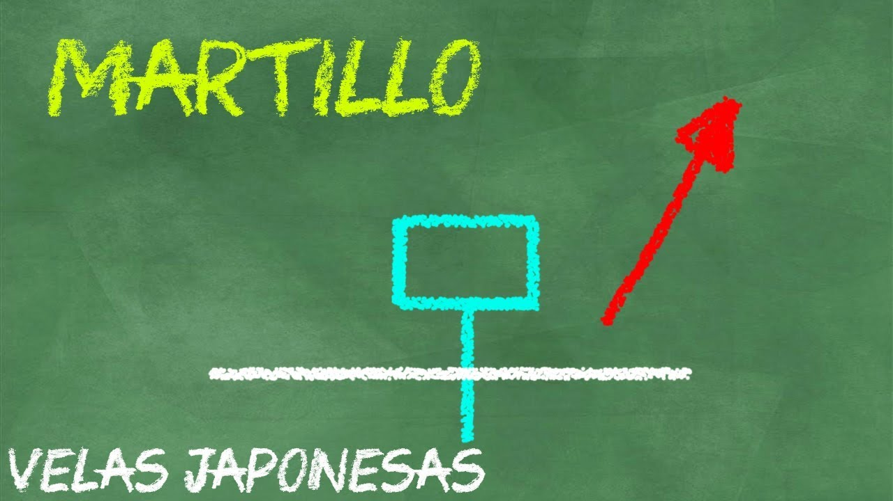
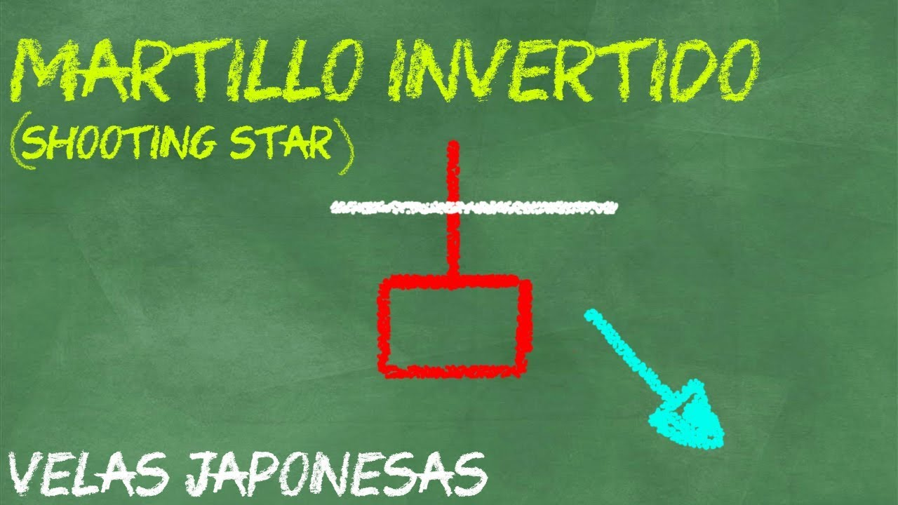

Cómo hacer Trading con el Martillo – Hammer y variaciones
Este es un patrón de vela bastante común, suele encontrarse fácilmente pero hay que tener una buena perspectiva cada vez que lo analicemos, ya que puede ser de continuidad o reversión.
Cómo siempre, para conocer el posible movimiento de la siguiente vela es necesario tomar en cuenta el contexto completo junto con el análisis de este patrón.
La característica principal del patrón Hammer o Martillo, es que la mecha es dos veces el tamaño del cuerpo.
En primer lugar podemos identificar al Hammer (Martillo) que es un patrón de vela alcista, el cuerpo se ubica en la parte superior y la mecha en la parte inferior, nos muestra presión por parte de los compradores.
Después del Martillo podemos identificar al Hanging Man (Hombre Ahorcado), que es un patrón bajista, el cuerpo se ubica en la parte superior y la mecha en la parte inferior. Dependiendo del contexto puede indicarnos desde presión alcista (empuje de la mecha hacia arriba) o presión bajita (Vendedores intentando empujar hacia abajo).
En la siguiente clase explico mejor cómo podemos operar con el patrón Hammer y Hanging Man:

Existen otras variaciones más de este patrón de vela japonesa, aún falta el Inverted Hammer.
El Martillo Invertido o Inverted Hammer es un patrón de vela alcista, tiene el cuerpo en la parte inferior y la mecha en la parte superior. Dependiendo del contexto nos muestra presión por parte de los vendedores, o presión por parte de los compradores.
Por ultimo tenemos la Shooting Star o Estrella Fugaz, este patrón de vela es bajista, tiene el cuerpo en la parte inferior y la mecha en la parte superior, nos indica presión por parte de los vendedores.
En el siguiente vídeo explico a detalle cómo identificarlo y como operar estos patrones de velas:

Cómo puedes observar, en tendencias fuertes este patrón puede indicar continuidad, y en tendencias que han perdido fuerza y que no han logrado pasar un nivel de S/R pueden indicar una reversión.